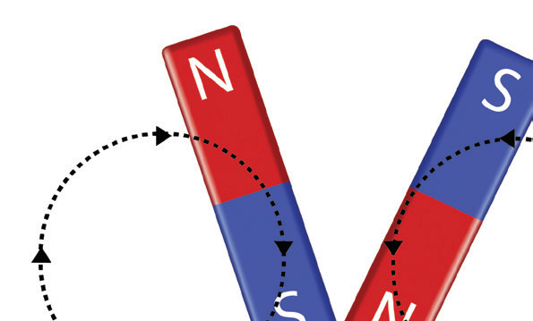
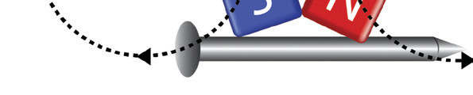

Figure 3.20: Double touch method

Activity 3.4
Procedure
Questions
(a) Why must step 2 be repeated during the magnetisation process?
(b) Why are wide loops important when stroking with the magnet?
(c) Explain the significance of loading the pins one below the other.
For each stroke, several dipoles align themselves in one direction. Stroking is repeated to ensure that a maximum number of dipoles have aligned themselves to such a level that the end product is a magnet. A state where no further alignment takes place is known as saturation. A load of pins placed one after the other is used to test for saturation. If the magnet can hold the pins, then it has reached its saturation. During stroking, a wide loop is advised so that the alignment of the dipoles is not disturbed.
The third method of magnetisation relies on the fact that an electric current produces a magnetic field. A long wire is wrapped around an object, such as a nail and connected to a battery as shown in Figure 3.21. The direct current supplied in the wire produces a magnetic field that magnetises the nail. The combined effect of all the turns of wire produces a field similar to that of a bar magnet. A wire coil of several turns is called a solenoid. To increase the field strength of the magnet formed by a solenoid, a soft iron core is